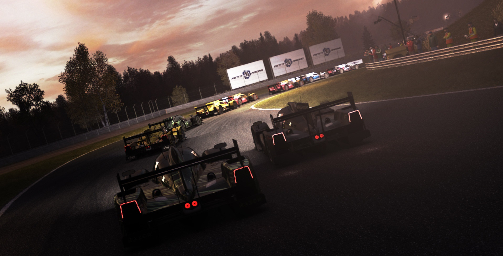
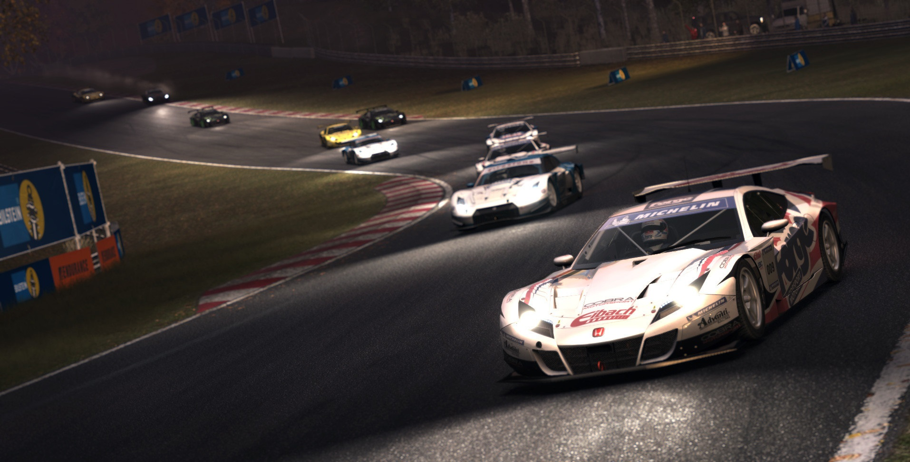
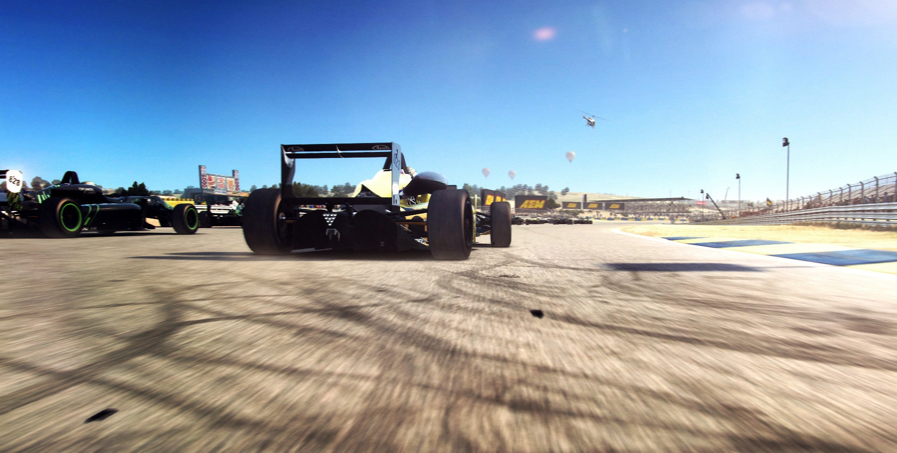

Grid Autosport
Grid Autosport (styled as GRID Autosport) is a racing video game by Codemasters and is the sequel to 2008's Race Driver: Grid and 2013's Grid 2. The game was released for Microsoft Windows, PlayStation 3 and Xbox 360 on June 24, 2014. The game features the return of in-car view that was removed from Grid 2 and changed handling with 100 routes across 22 locations.
Immerse yourself in the thrilling and intense world of a professional race driver with Grid Autosport, the third game in Codemasters' authentic racing series. Overcome key rivals and satisfy team sponsors in ferocious races where every pass and position counts. Compete in your favorite racing discipline or be the ultimate racer and conquer them all. Over 100 routes across 22 incredible locations and the world’s most authentic contemporary and classic high-performance racing cars to collect, tune, and upgrade. Become a champion.
Take on aggressive pack racing in Touring Cars, manage your tyre wear in Endurance events, race smoothly and with precision in Open-Wheel cars, demonstrate your car control in Drift competitions and react on the fly in Street Races.
Importantly, Autosport redresses concerns with Grid 2’s handling model: that it was a one-size-fits-all model honed for easy powerslides. Autosport more closely matches the handling in the original Grid; it still straddles the line between simulation and arcade, but it does ask us to take things a little more seriously than Grid 2 ever did. Even with the driving aids off I found Autosport fairly forgiving, but measured acceleration, steady steering, and careful braking are still key if you want a spot on the podium.
The Touring category is where Autosport most resembles the typical Codemasters circuit racers of old. Autosport lacks the real-world championships of its Race Driver ancestors, but the aggressive doorhandle-to-doorhandle nature of touring car racing is extremely well-emulated. Real-life circuits are the focus here (there are 13, compared to Grid 2’s five, and most feature several routes), and Codemasters has reinserted practice periods and qualifying rounds. The default length for the races errs on the short side, but there’s an option to multiply race distances by up to five should you find yourself yearning for longer contests.